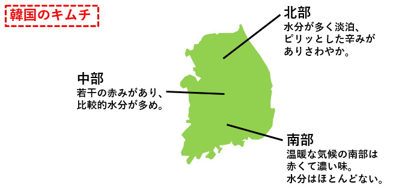
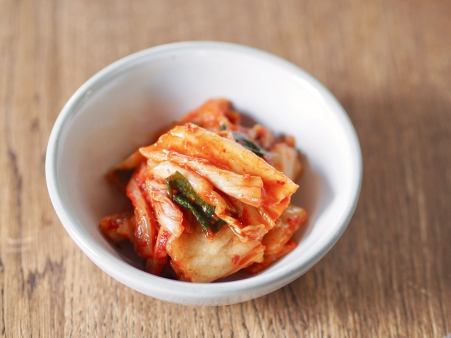
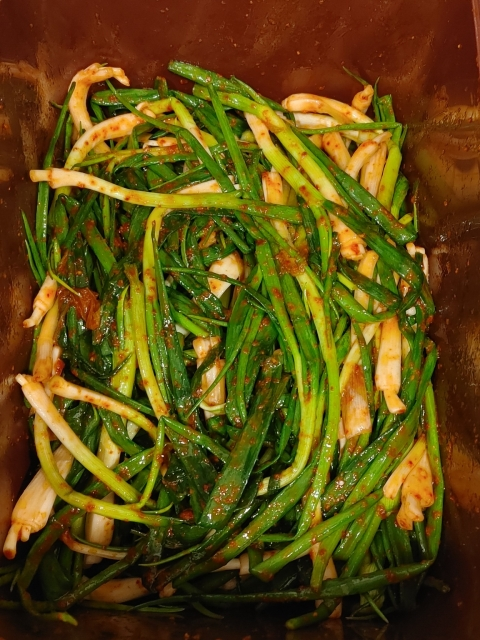
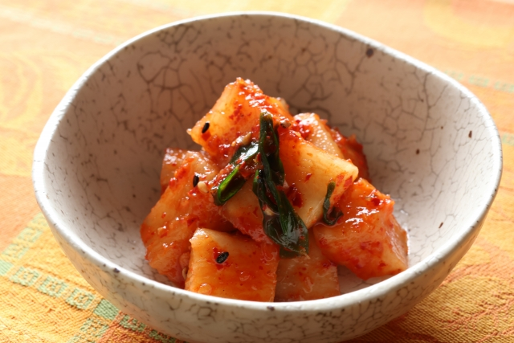
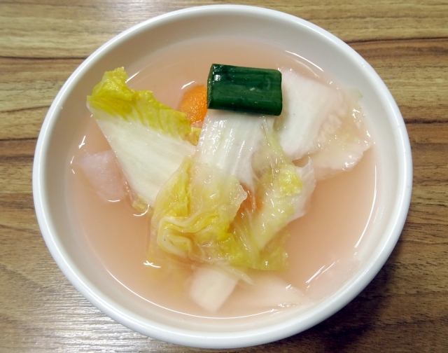
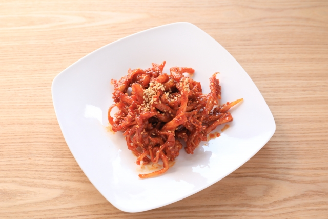
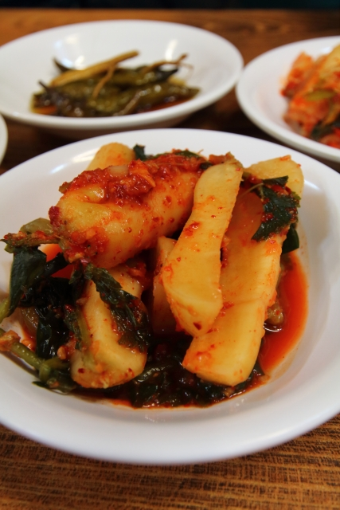
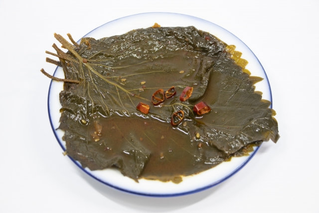
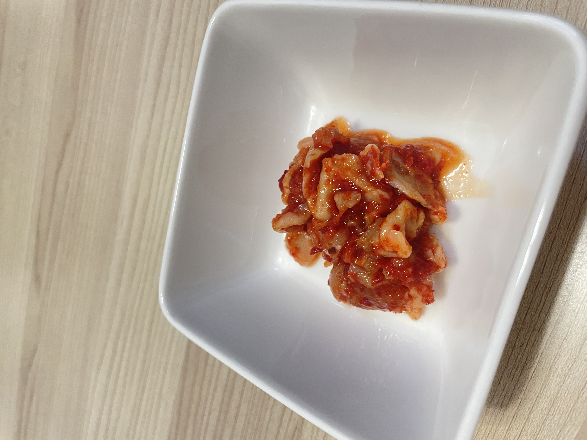

地域によって違うキムチ
北方の寒い地域では、塩辛くなく唐辛子や魚の塩漬もあまり入らない白菜キムチ、包みキムチなどが多いです。
中部地方は比較的味が弱くて、薬味が少なく貝やエビの塩辛を使い、素朴で淡白な味のキムチが多いです。
南方の暖かい地域では、唐辛子や塩をたくさん使ってキムチを漬けるのが特徴となっています。

北方の寒い地域では、塩辛くなく唐辛子や魚の塩漬もあまり入らない白菜キムチ、包みキムチなどが多いです。
中部地方は比較的味が弱くて、薬味が少なく貝やエビの塩辛を使い、素朴で淡白な味のキムチが多いです。
南方の暖かい地域では、唐辛子や塩をたくさん使ってキムチを漬けるのが特徴となっています。
白菜キムチ葉の一枚一枚にていねいに薬味を塗りこんで、暗所で
|
ねぎキムチ韓国ではわけぎで作ることが多いです。わけぎに粉唐
|
大根キムチ大根キムチは大根のみずみずしくシャキッとした歯ごたえ
|
水キムチ水キムチとは、名前のとおり漬け汁で漬けたキムチのこと
|
イカキムチイカキムチとは、イカを唐辛子の粉末などを使ったタレで
|
チョンガクキムチ葉が付いたままのチョンガク大根韓国特有の小ぶりの大根）を
|
エゴマの葉キムチエゴマの葉の味は、しその葉によく似ていますが、日本
|
チャンジャチャンジャとは鱈(たら)の胃袋のキムチのです。コリコリ
|